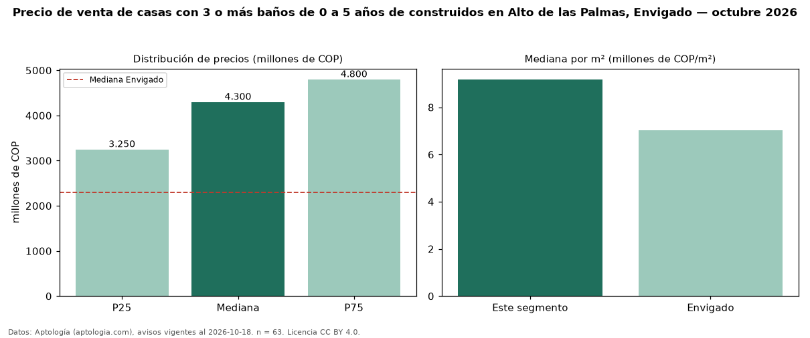

Precio de venta de casas con 3 o más baños de 0 a 5 años de construidos en Alto de las Palmas, Envigado — octubre 2026
COP 4,30 mil millones es el precio mediano de casas con 3 o más baños de 0 a 5 años de construidos en venta en Alto de las Palmas, Envigado (n = 63 avisos). Frente a la mediana de las casas con 3 o más baños en venta de Alto de las Palmas (COP 4,10 mil millones, n = 117), queda 5 % por encima; este segmento reúne el 54 % de esos avisos. Por metro cuadrado, la mediana es COP 9,18 millones/m² (n = 55), 1 % por encima de las casas con 3 o más baños en venta de Alto de las Palmas (COP 9,10 millones/m²). El área mediana anunciada es 458 m². El segmento con más oferta es el de 3 o más habitaciones (63 avisos, mediana COP 4,30 mil millones). La administración mediana declarada es COP 988.000 al mes (n = 35). El estrato más frecuente es 6 (54 % de los avisos con estrato). La mediana de todas las casas en venta de Envigado es COP 2,30 mil millones (+87 % de diferencia). Datos: Aptología (aptologia.com), CC BY 4.0 — https://www.aptologia.com/casas-en-venta/envigado/alto-de-las-palmas. Archivos: PDF, CSV con las cifras y gráfica PNG.

| Avisos únicos | 63 |
|---|---|
| Percentil 25 | COP 3.250.000.000 |
| Mediana | COP 4.300.000.000 |
| Percentil 75 | COP 4.800.000.000 |
| Mediana por m² | COP 9.183.673 |
Fuente: avisos vigentes de portales inmobiliarios recopilados por Aptología, deduplicados (mínimo 30 avisos únicos por celda). Precios pedidos, no cerrados. Fecha: 2026-10-18.